先看主线，再背公式，最后做题
每个专题页都按“概念框架、公式变量、典型题型、原讲义对照、自测问题”组织。复习时从左侧目录跳转，遇到计算题直接回到高亮公式段。
把整门课压成一条复习主线：先明确系统结构研究什么，再用定量方法评价性能，最后逐个拆解处理器、存储、I/O、互联网络和多处理器。
每个专题页都按“概念框架、公式变量、典型题型、原讲义对照、自测问题”组织。复习时从左侧目录跳转，遇到计算题直接回到高亮公式段。
12 页原讲义截图可展开核对，适合考前查原表、原图和例题。
正文已经把知识点重新组织；这里保留讲义页面缩略图，方便你在需要时回看原版题目、图和表。
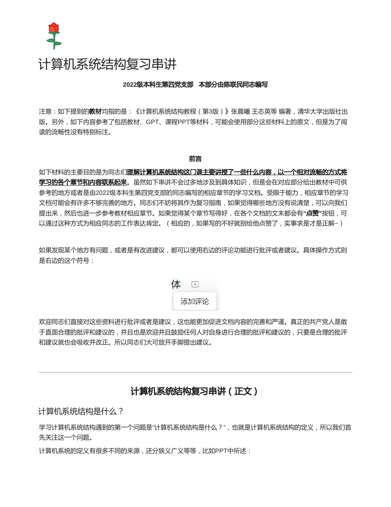
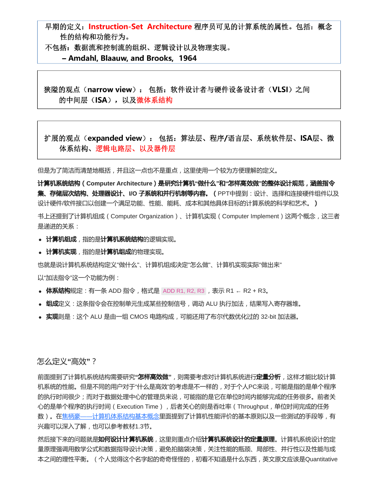
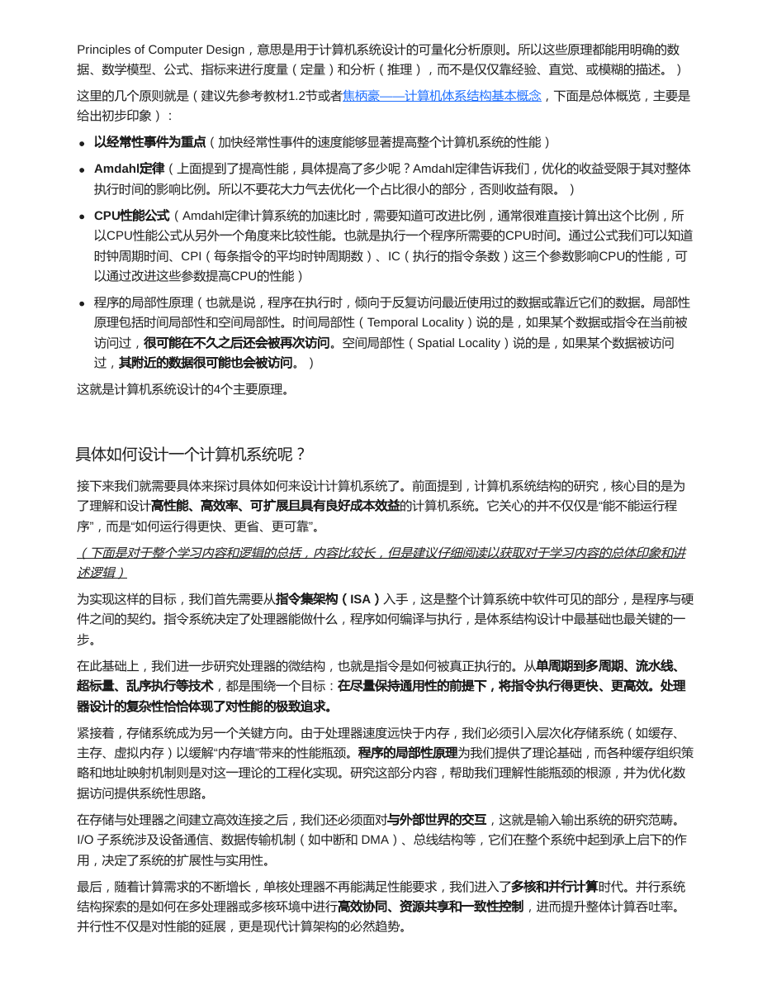
计算机系统结构这门课可以统一理解成一个问题：如何设计一个计算系统，让它在功能、性能、成本、功耗、可靠性和可编程性之间取得合理平衡。所有章节都围绕这个目标展开。
ISA 规定软件能看到什么：指令、寄存器、寻址方式、异常和中断等。它是软件和硬件之间的契约。
流水线、分支预测、多指令流出等技术都在开发指令级并行，目标是降低 CPI、提高吞吐率。
存储墙、I/O 可靠性、互联网络带宽、多处理器同步，都是系统层面的性能和正确性问题。
| 层次 | 关心的问题 | 例子 |
|---|---|---|
| 计算机系统结构 | 机器对程序员和编译器呈现什么功能，属于“做什么”。 | 是否有 ADD 指令，指令格式、寄存器数量、寻址方式。 |
| 计算机组成 | 这些功能用什么逻辑部件和控制流程实现，属于“怎么做”。 | ALU、寄存器堆、控制信号、数据通路。 |
| 计算机实现 | 组成方案如何落到具体电路、工艺、物理结构上，属于“做出来”。 | CMOS 门电路、版图、32 位加法器实现。 |
考试如果要求解释三者关系，抓住“系统结构是软件可见接口，组成是逻辑实现，实现是物理实现”就不容易跑偏。
系统结构设计不能只凭直觉，需要用执行时间、吞吐率、CPI、失效率、可靠度等指标做比较。后面每一章的计算题，本质上都是把具体问题转化成这些指标。
优化高频路径最划算。哪一部分占总时间比例越大，优化它对总性能的影响越明显。
加速比受可改进部分比例限制。可并行部分少时，处理器数量再多也不会得到理想加速。
从 IC、CPI、时钟周期时间三个量拆解 CPU 时间，方便定位优化来自哪里。
时间局部性和空间局部性是 Cache、预取、存储层次能有效工作的基础。
| 章节 | 必会公式 | 典型题型 |
|---|---|---|
| 基本概念 | CPU 时间 = IC x CPI x 时钟周期；Speedup = 1 / ((1 - f) + f / s) | Amdahl 反求比例；平均 CPI；MIPS/MFLOPS。 |
| 流水线 | Tk = (k + n - 1)Δt；TP = n/Tk；S = T顺序/T流水；E = 有效时空面积/总时空面积 | 等时/不等时流水线；时空图；非线性调度。 |
| 指令级并行 | CPI流水线 = CPI理想 + 各类停顿；理想 CPI 约为 1/流出宽度 | BHT 状态更新；BTB 延迟；超标量/VLIW/超流水线比较。 |
| 存储系统 | AMAT = Hit Time + Miss Rate x Miss Penalty；两级 AMAT = H1 + MR1(H2 + MR2P2) | 地址字段；Cache 策略；两级 Cache；主存带宽；TLB/脏块写回。 |
| I/O 外存 | 串联 R = ΠRi；并联 R = 1 - Π(1 - Ri)；Availability = MTTF/(MTTF+MTTR) | 可靠度；RAID 小写；RAID10/01 对比。 |
| 互联网络 | 超立方体距离 = 汉明距离；Omega 级数 = log2N；开关数 = (N/2)log2N | 互连函数变换；最短路；Omega 寻径。 |
| 多处理器 | 并行加速比 = 1 / ((1 - f) + f / p)；CPI = 本地 CPI + 通信/同步停顿 | 并行上限；远程访问；MSI 状态；同步开销。 |
合上正文后先试着口答，再展开看答案。能把这些问题讲清楚，本章主线基本就稳了。
系统结构回答“对软件承诺什么功能”，组成回答“用什么逻辑部件实现”，实现回答“落到什么物理电路/工艺”。
因为系统设计需要比较执行时间、CPI、吞吐率、失效率、可靠度等指标，避免只凭直觉判断优化是否值得。
局部优化收益受该部分原始时间占比限制，优化低频部分通常不会显著提高整体性能。
时间局部性和空间局部性让热点数据更可能在上层存储命中，因此 Cache/主存/辅存层次才有效。
先看总览主线，再集中公式计算，最后用各专题的概念对照和自测题查漏补缺。
下面是原资料的页面渲染图，正文复习完后可以展开对照图、公式和例题。
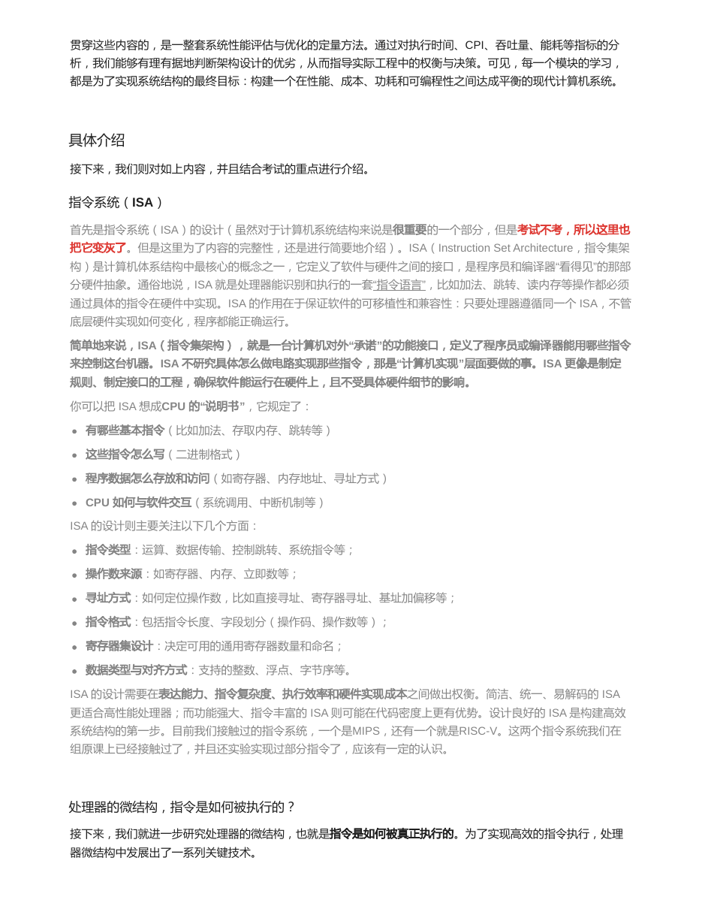
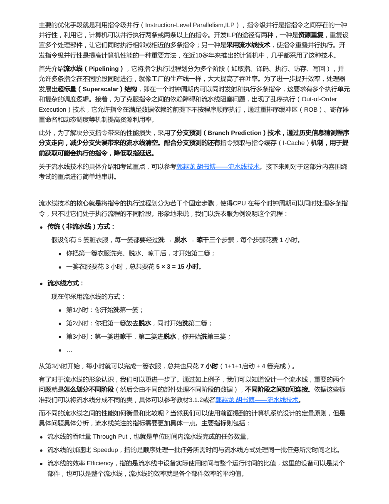
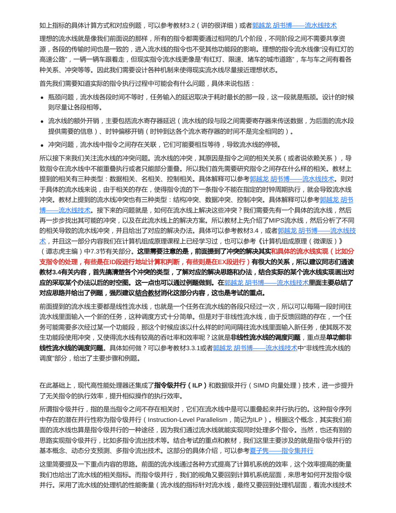
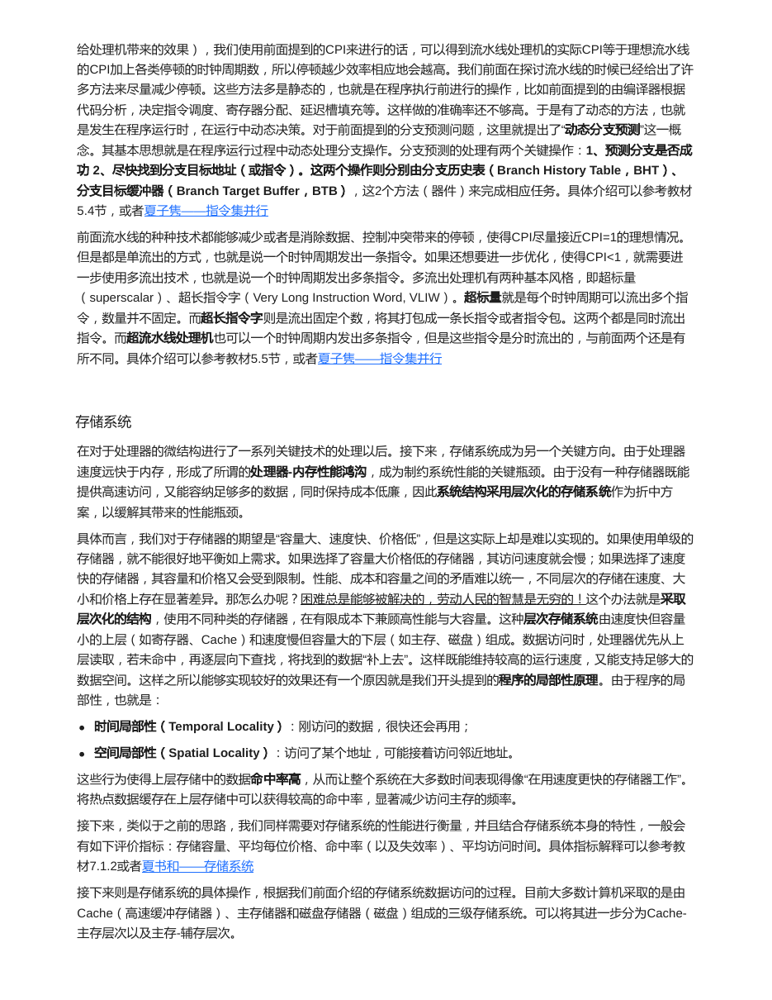
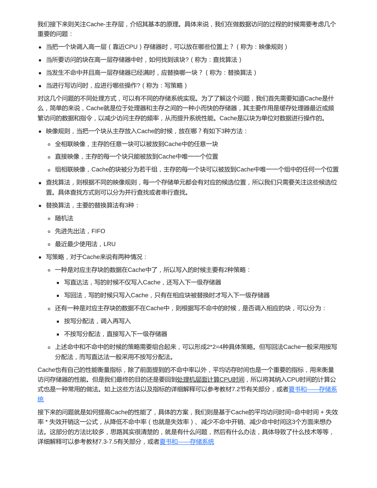
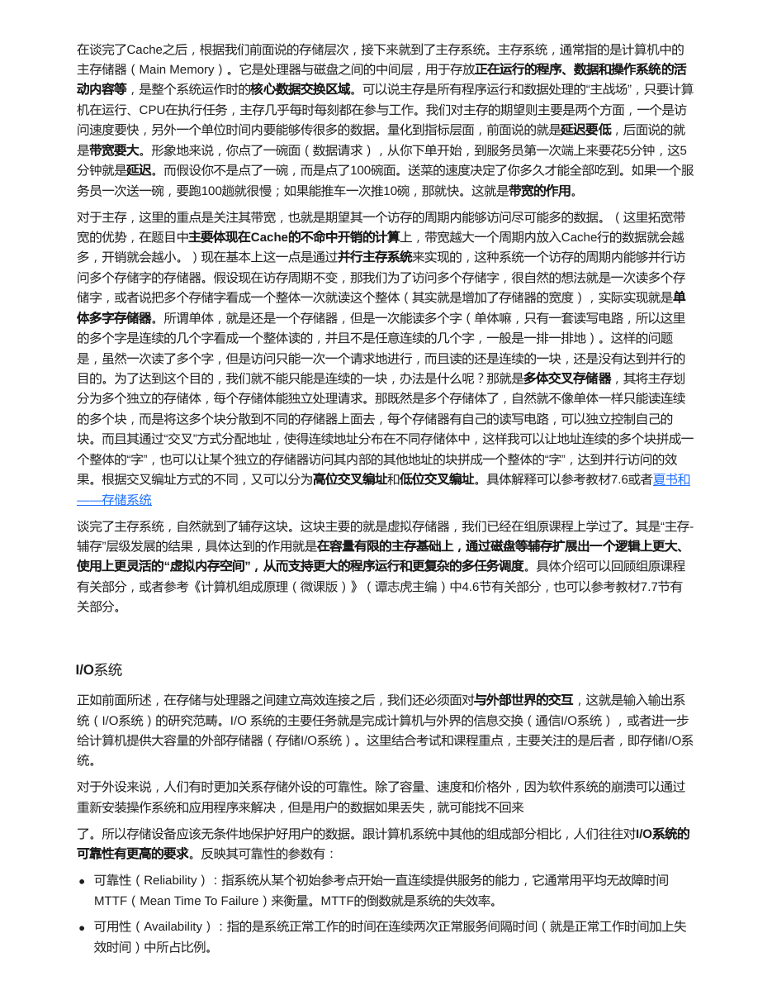
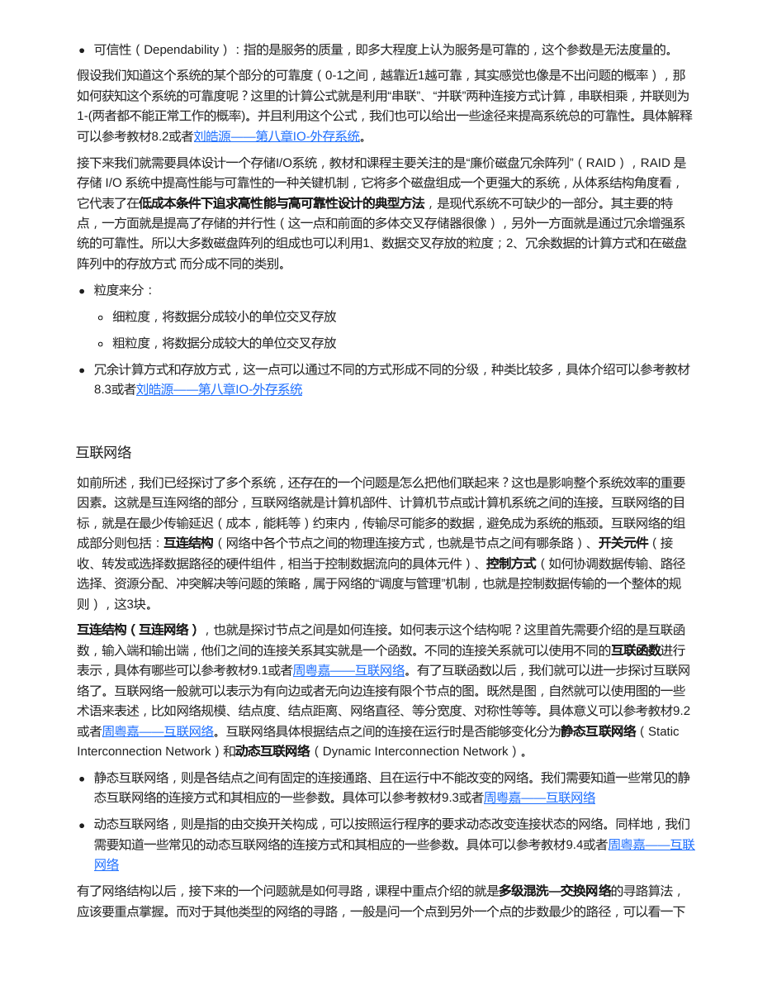
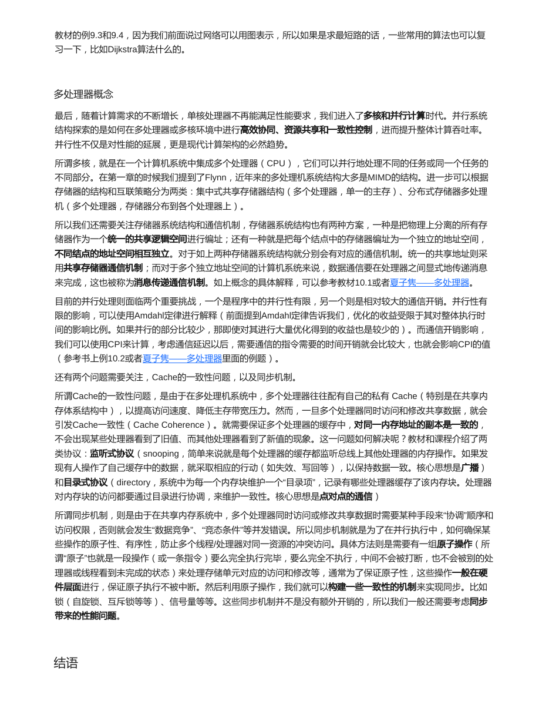
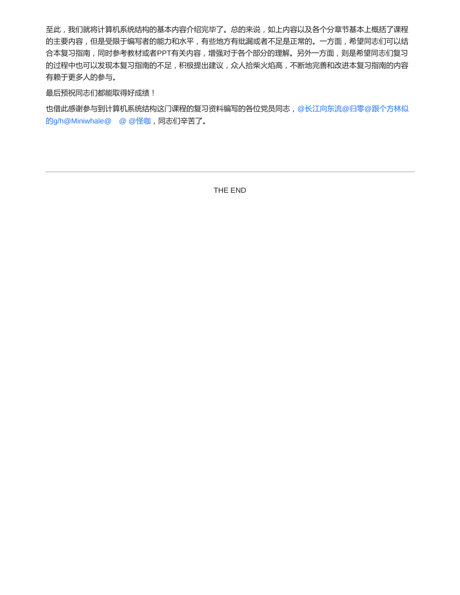